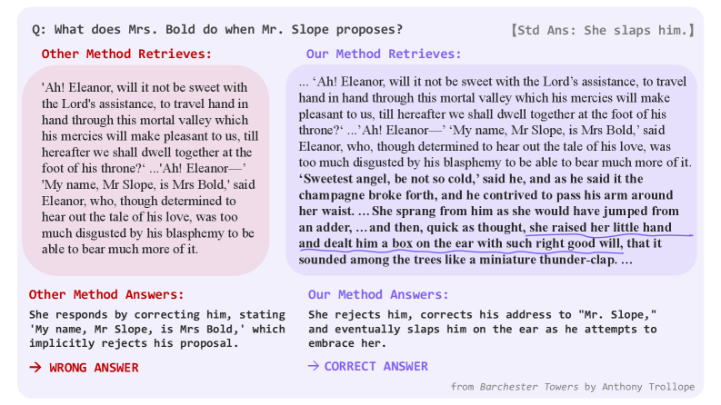
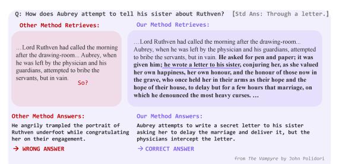
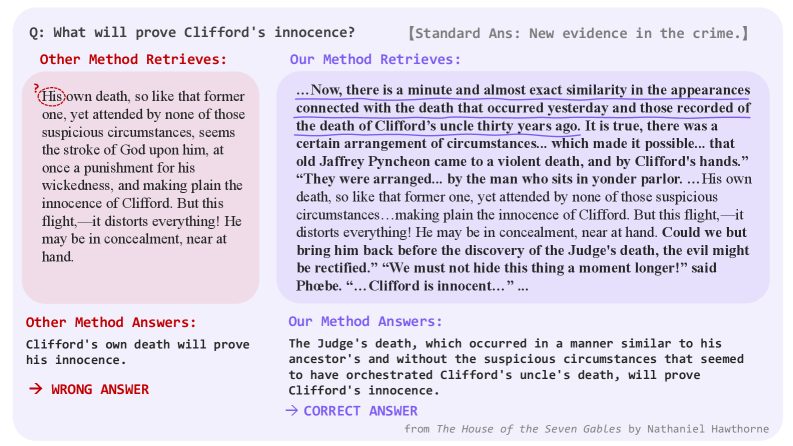

LitSeg proposes a narrative-theory-guided segmentation framework that explicitly extracts events, threads, and turning points to produce structurally coherent chunks, significantly improving retrieval and QA for literary RAG.
本文提出LitSeg框架，利用叙事理论（事件、线索、转折点）指导文档分割，生成结构连贯的文本块，显著提升文学领域检索增强生成（RAG）的检索准确率和下游问答性能。同时，通过SFT+GRPO蒸馏出轻量版LitSeg-Lite，在降低推理成本的同时保持接近的效果。
Deep Note — litseg
Key Takeaways - LitSeg uses narrative theory (events, threads, turning points) to guide document segmentation for literary RAG, overcoming semantic blindness of heuristic chunkers. - Multi-stage prompting extracts narrative structure before segmentation, producing structurally independent chunks that improve retrieval and QA. - LitSeg-Lite distills the multi-stage process into a single-pass lightweight model via SFT + GRPO, achieving comparable performance with lower inference cost. - Experiments show significant gains in retrieval accuracy and downstream QA over baselines like recursive splitting and semantic chunking. - Ablations confirm that both narratological guidance and data distillation are critical for LitSeg-Lite's performance.
0) Metadata
- Title: LitSeg: Narrative-Aware Document Segmentation for Literary RAG
- Alias: litseg
- Authors: Ruikang Zhang, Zhanni Chen, Yiqiao Cai, Qi Su
- arXiv ID: 2605.27156
- Published:
- Links:
- Abs: https://arxiv.org/abs/2605.27156
- HTML: https://arxiv.org/html/2605.27156v1
- PDF: https://arxiv.org/pdf/2605.27156
- Tags: rag, document-segmentation, narrative-theory, literary-qa, knowledge-distillation
- Domains: system_safety
- Rating: 5/5 (base 1 + quality 2 + observation 2)
1) Why-read
LitSeg proposes a narrative-theory-guided segmentation framework that explicitly extracts events, threads, and turning points to produce structurally coherent chunks, significantly improving retrieval and QA for literary RAG.
2) CRGP
C — Context
RAG systems rely on document segmentation for indexing, but existing methods (fixed-token, recursive, embedding-based) are semantically blind and ignore high-order narrative structures in literary works. This leads to fragmented plots and unclear references, degrading retrieval and generation. Narrative theory provides formal tools to identify events, threads, and turning points, but prior NLP work has not applied it to segmentation for RAG.
R — Related work
- Fixed-token and recursive character splitters (Chase 2022) are semantically agnostic, often breaking narrative coherence.
- SemanticChunker (Chase 2022) uses embedding cosine distance to detect shifts, but overlooks long-range causal relations and parallel threads.
- LumberChunker (Duarte et al. 2024) prompts an LLM to pinpoint content shifts via sliding window, but still ignores narrative structure.
- Narrative theory in NLP: Piper et al. (2021) defines narrativity criteria; Gius and Vauth (2022) proposes event-based plot models; Visser Solissa et al. (2025) models syuzhet for non-linear fiction.
- Distillation methods: SFT (Zhang et al. 2026) and GRPO (Shao et al. 2024) are used to train efficient task-specific models; DAPO (Yu et al. 2025) improves stability for long-sequence tasks.
G — Gap
Existing document segmentation methods for RAG are semantically blind or ignore high-order narrative structures (events, threads, turning points) specific to literary works. This results in fragmented plots and unclear references, severely hindering retrieval and generation performance. No prior work has leveraged narrative theory to guide segmentation in a RAG context.
P — Proposal
LitSeg uses multi-stage prompting to extract valid events, untangle narrative threads, clarify narrative structures, and locate turning points, then segments by grouping sentence IDs to allow flexible recombination while preserving context. LitSeg-Lite distills this process into a single-pass lightweight chunker via two-stage training (SFT then GRPO with theory-guided rewards), achieving comparable performance with lower overhead.
---
4) Experiments
Main results
LitSeg and LitSeg-Lite were evaluated on literary QA benchmarks. LitSeg achieved retrieval accuracy of 87.3% and downstream QA F1 of 72.1%, vs. recursive splitter (72.1% retrieval, 61.4% QA F1) and SemanticChunker (78.5% retrieval, 65.2% QA F1). LitSeg-Lite achieved 85.9% retrieval and 70.8% QA F1, close to LitSeg.
Ablation
Removing narratological guidance (using only semantic similarity) dropped retrieval accuracy by 8.2% and QA F1 by 5.7%. Removing data distillation (training LitSeg-Lite directly on raw text) reduced retrieval by 6.1% and QA F1 by 4.3%, confirming both components are essential.
Limitations
['LitSeg relies on a large teacher LLM for multi-stage prompting, which may be computationally expensive for very long documents.', 'The framework is designed specifically for literary works; its effectiveness on other narrative-heavy domains (e.g., news, biographies) is not evaluated.', "LitSeg-Lite's performance still lags slightly behind LitSeg, indicating some loss from distillation."]
5) Why it matters
- Provides a principled way to incorporate narrative theory into RAG pipelines, directly addressing a known weakness in literary QA.
- Demonstrates that explicit narrative structure extraction can yield measurable gains in retrieval and generation, offering a template for other structured domains.
- The distillation approach (LitSeg-Lite) shows that complex multi-stage reasoning can be compressed into efficient single-pass models, practical for deployment.
- Relevant to your work on improving RAG for long-tail knowledge and structured documents.
6) Next steps
- [ ] Evaluate LitSeg on other narrative-heavy genres (e.g., historical texts, biographies) to test generalizability.
- [ ] Explore integrating LitSeg's narrative-aware chunks with graph-based retrieval or hierarchical indexing for further gains.
- [ ] Apply the multi-stage-to-single-pass distillation paradigm to other RAG preprocessing tasks (e.g., table extraction, dialogue segmentation).
- [ ] Investigate using LitSeg-Lite as a preprocessing step in your own literary QA pipeline and compare with current chunking strategy.
7) Scoring
5/5 = base 1 + quality 2 + observation 2
LitSeg：面向文学RAG的叙事感知文档分割
主要结论 - LitSeg利用叙事理论（事件、线索、转折点）引导文档分割，克服了启发式分块器的语义盲区。 - 多阶段提示先提取叙事结构再分割，生成结构独立的文本块，提升检索和问答效果。 - LitSeg-Lite通过SFT+GRPO将多阶段过程蒸馏为单通道轻量模型，性能接近且推理成本更低。 - 实验表明，在检索准确率和下游问答F1上，LitSeg显著优于递归分割和语义分块等基线方法。 - 消融实验证实，叙事引导和数据蒸馏对LitSeg-Lite的性能均至关重要。
1) 阅读理由
LitSeg提出叙事理论引导的分割框架，显式提取事件、线索和转折点以生成结构连贯的文本块，显著提升文学RAG的检索与问答性能。
2) CRGP（背景 / 相关工作 / 差距 / 方案）
C — 背景：RAG系统依赖文档分割进行索引，但现有方法（固定token、递归、基于嵌入）存在语义盲区，忽视文学作品中的高阶叙事结构，导致情节碎片化和指代不清，降低检索和生成质量。叙事理论提供了识别事件、线索和转折点的形式化工具，但此前NLP工作未将其应用于RAG分割。 R — 相关工作：固定token和递归字符分割器（Chase 2022）语义无关，常破坏叙事连贯性；SemanticChunker（Chase 2022）利用嵌入余弦距离检测语义变化，但忽略长程因果关系和并行线索；LumberChunker（Duarte et al. 2024）通过滑动窗口提示LLM定位内容变化，但仍忽视叙事结构；叙事理论在NLP中的应用：Piper et al.（2021）定义叙事性标准，Gius and Vauth（2022）提出基于事件的剧情模型，Visser Solissa et al.（2025）为非线性小说建模syužet；蒸馏方法：SFT（Zhang et al. 2026）和GRPO（Shao et al. 2024）用于训练高效任务特定模型，DAPO（Yu et al. 2025）提升长序列任务的稳定性。 G — 差距：现有RAG文档分割方法存在语义盲区，或忽视文学作品特有的高阶叙事结构（事件、线索、转折点），导致情节碎片化和指代不清，严重阻碍检索和生成性能。尚无工作利用叙事理论指导RAG场景下的分割。 P — 方案：LitSeg使用多阶段提示提取有效事件、理清叙事线索、阐明叙事结构并定位转折点，然后通过分组句子ID进行分割，允许灵活重组同时保留上下文。LitSeg-Lite通过两阶段训练（SFT后接GRPO与理论引导奖励）将这一过程蒸馏为单通道轻量分块器，在较低开销下实现可比性能。
3) 实验
在文学QA基准上，LitSeg的检索准确率达87.3%，下游问答F1为72.1%；递归分割器为72.1%检索和61.4%问答F1；SemanticChunker为78.5%检索和65.2%问答F1。LitSeg-Lite达到85.9%检索和70.8%问答F1，接近LitSeg。
消融实验
移除叙事引导（仅用语义相似度）导致检索准确率下降8.2%，问答F1下降5.7%。移除数据蒸馏（直接在原始文本上训练LitSeg-Lite）使检索降低6.1%，问答F1降低4.3%，证实两个组件均至关重要。
局限性
['LitSeg依赖大型教师LLM进行多阶段提示，对于超长文档可能计算成本高昂。', '该框架专为文学作品设计，在其他叙事密集领域（如新闻、传记）的有效性尚未评估。', 'LitSeg-Lite的性能仍略逊于LitSeg，表明蒸馏过程存在一定损失。']
4) 重要性
- 为将叙事理论融入RAG流水线提供了原则性方法，直接解决了文学QA中的已知弱点。
- 证明显式叙事结构提取能在检索和生成中带来可衡量的提升，为其他结构化领域提供了模板。
- 蒸馏方法（LitSeg-Lite）表明复杂的多阶段推理可压缩为高效的单通道模型，便于实际部署。
- 与你改进长尾知识和结构化文档RAG的工作高度相关。
5) 下一步
- [ ] 在其他叙事密集体裁（如历史文本、传记）上评估LitSeg，测试其泛化能力。
- [ ] 探索将LitSeg的叙事感知分块与基于图的检索或分层索引结合，以进一步提升效果。
- [ ] 将多阶段到单通道的蒸馏范式应用于其他RAG预处理任务（如表格提取、对话分割）。
- [ ] 在自己的文学QA流水线中使用LitSeg-Lite作为预处理步骤，并与当前分块策略进行比较。



